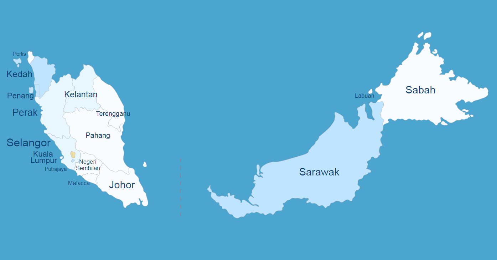
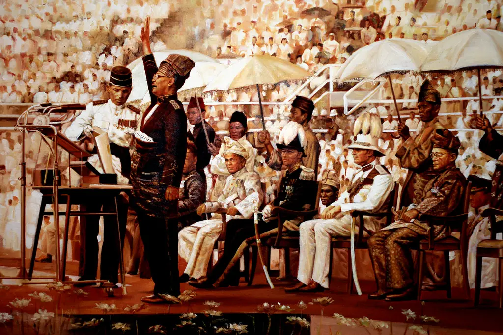
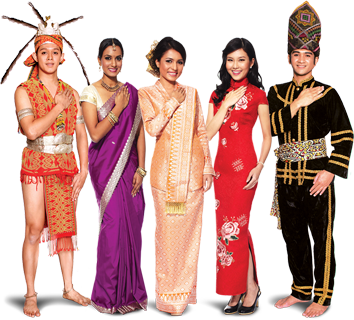
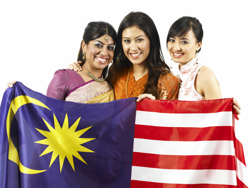

Malaysia is a rich mixture of cultures, modern buildings next to traditional spice markets, and rainforests teeming with rare and endangered species. The Malaysian diversity of ethnicities and religions is celebrated throughout the year with many different multicultural festivals. Because Malaysia’s population is so diverse, Muslim, Buddhist, Hindu, Christian and other holidays are observed throughout the country.
History and Economy

The history of Malaysia started in the early 15th century with the establishment of the Melaka Sultanate. The country achieved independence on 31 August 1957 as the Federation of Malaya. Malaysia was formed in 1963 with the entry of Singapore, Sabah and Sarawak.
People and Culture

Malays are the largest ethnic group
in
Malaysia,
accounting for half of the total population. They believe in Islam, can speak Malay,
and follow Malay traditional folk customs and culture.
The costumes of Malay men and women are colorful.
The Malays have their traditional costumes, called dresses.
Dresses are worn on formal occasions and grand festivals call "buddy".
Among the Chinese in Malaysia,
the Chinese are the second largest ethnic group. There are also great differences
in the ancestry and ethnic groups of the Malaysian Chinese.
Religions practiced by the Chinese include Buddhism, Taoism and Christianity.
Most of them communicate in Chinese. The traditional costumes of Malaysian Chinese
are biased towards China culture.
Indians have become the third
largest
ethnic group in Malaysia, after Malays and Malaysian Chinese.
The Malaysian Indian community, which is mainly composed of Tamils, is mainly Hindu.
One of the biggest Indian festivals in Malaysia is Thaipusam,
which falls in January or February of the Gregorian calendar.
The homeland of the Iban people
is the northwestern part of Borneo, especially Sarawak in Malaysia.
The Iban mostly speak one language, belonging to the Malayo-Polynesian branch
of the Austronesian language family. Traditional features of the Iban culture
include living in longhouses called rumah panjai or betang.
The Kadazan-Dusun people in
Malaysia
are the largest Dayak ethnic group in Sabah, Malaysia.
The Kadazan-Dusun people in Malaysia mainly believe in Roman Catholicism and
Protestantism,
and a few people believe in Islam and traditional dogmas.
The Harvest Festival in May is their most important festival.
The main purpose is to thank God and worship the god of rice,
.jpg)
The country’s official language is Bahasa Melayu (Malay language), but many other languages and dialects are used in Malaysia. Mandarin is widely spoken by the Malaysian Chinese besides dialects like Cantonese, Hokkien, Hakka, Teo Chew, Foo Chow, Hock Chew, and Hainanese. The Malaysian Indian communities speak dialects like Tamil, Hindi, Telugu, Malayalam, Punjabi and Sri Lankan, among others.

Islam is the official religion of Malaysia but other faiths like Buddhism, Christianity, Hinduism, Taoism and Sikhism are practised freely by all Malaysians. The Federal Constitution guarantees freedom of religion in the country.